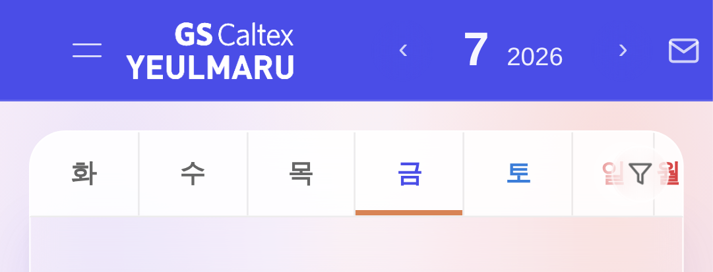
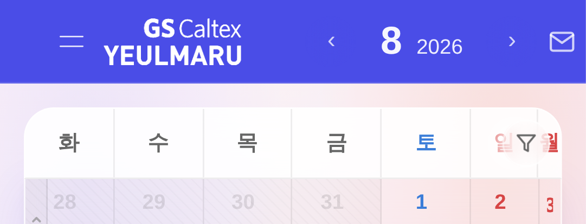
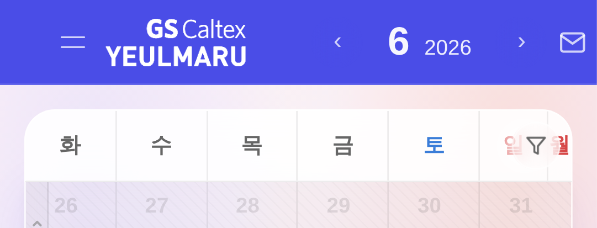
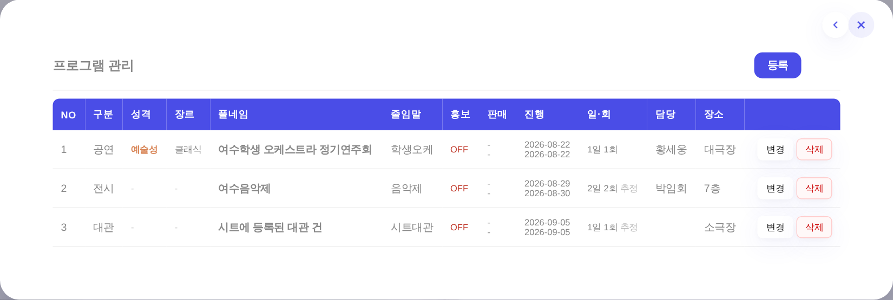
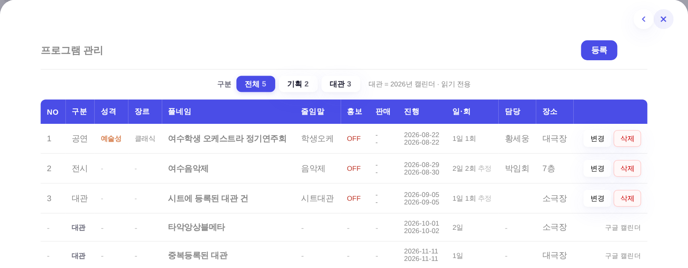
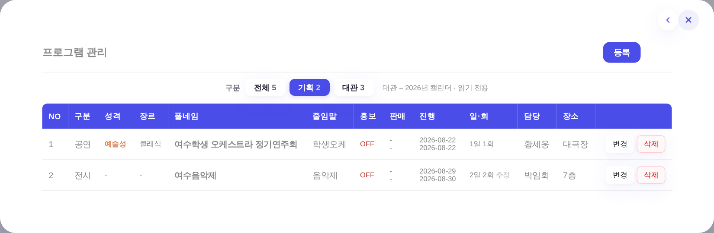
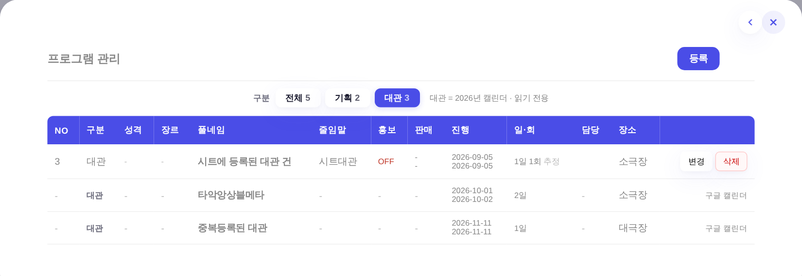

전 — ① 시작

전 — ② ← 스와이프 (그대로 7월)

전 — ③ → 2번 (그대로 7월)

후 — ① 시작

후 — ② ← 스와이프 → 8월

후 — ③ → 2번 → 6월

file://index.html 부팅 후 실제 TouchEvent 발생 / 프로그램 관리는 시트·구글캘린더 응답을 고정 표본으로 주입)
| 조작(캘린더 위) | 전 | 후 |
|---|---|---|
| 시작 | 2026년 7월 | 2026년 7월 |
| ← 왼쪽으로 밀기 | 2026년 7월 (변화 없음) | 2026년 8월 (다음 달) |
| → 오른쪽으로 2번 | 2026년 7월 (변화 없음) | 2026년 6월 (이전 달) |
| 20px 짧은 스와이프 | 변화 없음 | 변화 없음 (48px 미만 무시) |
| 세로가 우세한 제스처 | 페이지 스크롤 | 페이지 스크롤 (월 안 바뀜) |
전 — ① 시작
전 — ② ← 스와이프 (그대로 7월)
전 — ③ → 2번 (그대로 7월)
후 — ① 시작

후 — ② ← 스와이프 → 8월

후 — ③ → 2번 → 6월

왜 세로가 아니라 가로인가 — 모바일에서 세로 스와이프는 페이지 스크롤(하단 시트·긴 셀)이라 뺏으면 안 된다.
가로로만 받고, 세로 이동이 12px 앞서면 그 제스처는 즉시 포기해 스크롤에 양보한다.
기존 롱프레스(_initLongPress)는 10px 이동에서 스스로 취소되므로 충돌 없음. 데스크톱 휠과 같은 changeMonth 축을 쓴다.
한 날짜 셀 안에서 이름·장소·구분이 정규화 후 전부 같은 일정만 접는다(_perfDedupDay, getPerfs 마지막 단계).
정본(PERFS)이 같은 공연을 여러 행으로 들고 있거나, 같은 일정이 구글 캘린더 두 곳에 등록돼 id가 갈린 경우가 여기 걸린다.
| 2026-08-22 셀에 넣은 표본 | 전 | 후 |
|---|---|---|
| 「여수학생 오케스트라 정기연주회」 완전 동일 2행 | 2건 표시 | 1건 |
| 「뮤지컬 <그날들>」 / 「뮤지컬그날들」 (괄호만 다름) | 2건 표시 | 1건 |
| 이름 같고 장소가 다름(대극장 / 소극장) | 2건 | 2건 유지 (남남) |
| 이름 같고 구분이 다름(기획 / 대관) | 2건 | 2건 유지 (남남) |
이름이나 장소가 조금이라도 다르면 접지 않는다 = 오제거 0. 먼저 온 쪽(정본 PERFS)이 남는다 — 기존 _gcDupSet의 「정본 우선」 계약과 같은 방향.
전 — 프로그램 시트 3건만 (대관 구분 없음)

후 — 상단 「구분」 세그먼트 + 구글 캘린더 대관 합류

후 — 기획 탭

후 — 대관 탭

| 고정 표본(프로그램 시트 3건 + 구글캘린더 7행) | 전 | 후 |
|---|---|---|
| 표에 보이는 행 | 3건 (시트만) | 5건 (시트 3 + 대관 2) |
| 상단 구분 | 없음 | 전체 5 / 기획 2 / 대관 3 |
| 2일짜리 대관(캘린더 2행) | — | 1건으로 묶임 (10-01~10-02) |
| 같은 대관이 캘린더 두 곳에 등록(uid 2개) | — | 1건만 |
| 정본에 이미 있는 「여수학생 오케스트라 정기연주회」 대관 행 | — | 제외 (정본 우선) |
| [기획] 태그 일정 / 「공사」 | — | 제외 |
.fbar-seg를 그대로 계승(신규 형태·신규 색 0)._gcParse·uid 그룹핑·_gcNorm을 그대로 재사용한다. 캘린더와 프로그램 관리가 같은 규칙으로 같은 목록을 말한다.대관 조회 범위 = 현재 보고 있는 연도 1년치(/api/gcal?from=YYYY-01-01&to=YYYY-12-31).